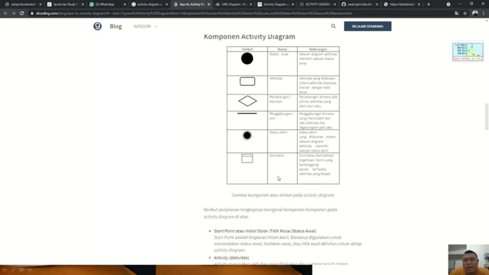
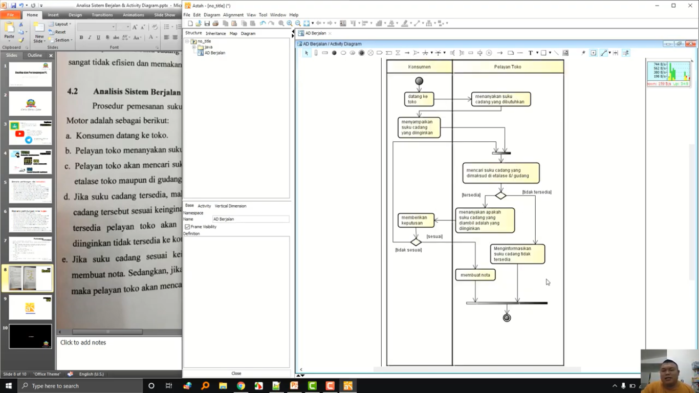

NIM : 1811500056
Nama : Agusti Prananda
Kelompok : TI6A
Hasil saya menyadur dipertemuan ke-2 :
- Perhitungan nilai Kehadiran cukup membuat file index.html di setiap direktori pertemuan yang berisikan Nim, Nama, dan Kelompok
- Perhitungan nilai Tugas tergantung dari kualitas konten file index.html tiap pertemuan yang saya sadur
- Tahap analisa sistem berjalan yaitu :
A. Analisa masalah pada suatu kegiatan yang dibahas
B. Analisa sistem berjalan terkait proses kegiatan yang dilakukan
C. Activity Diagram untuk memodelkan sistem berjalan
- Activity Diagram menggambarkan aktivitas sistem bukan apa yang dilakukan aktor
- Komponen Activity Diagram

- Pembuatan activity diagram menggunakan software Asatah community 3

Hasil file project astah Download